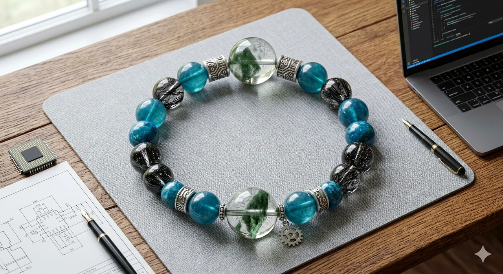
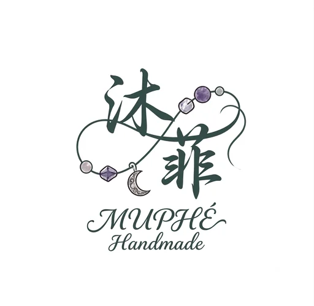
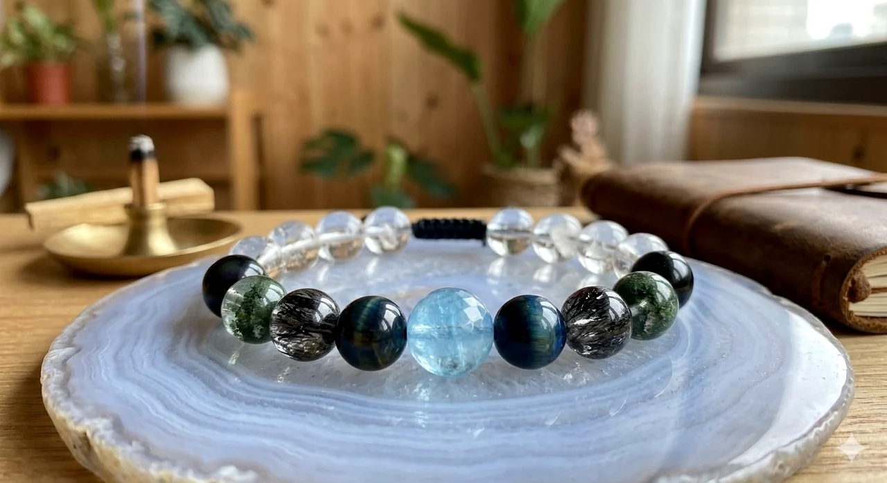
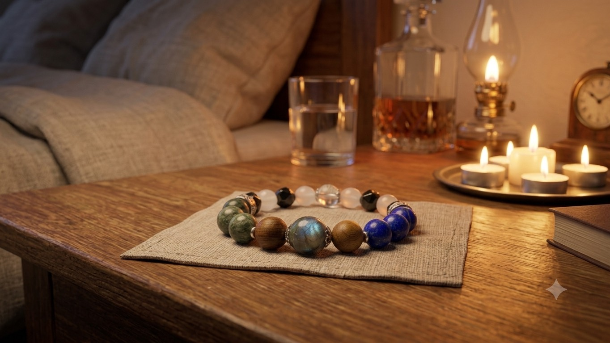
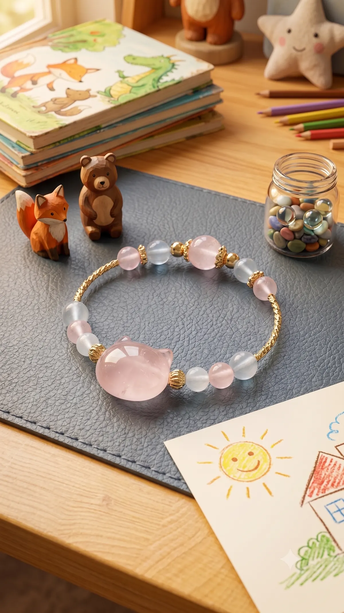
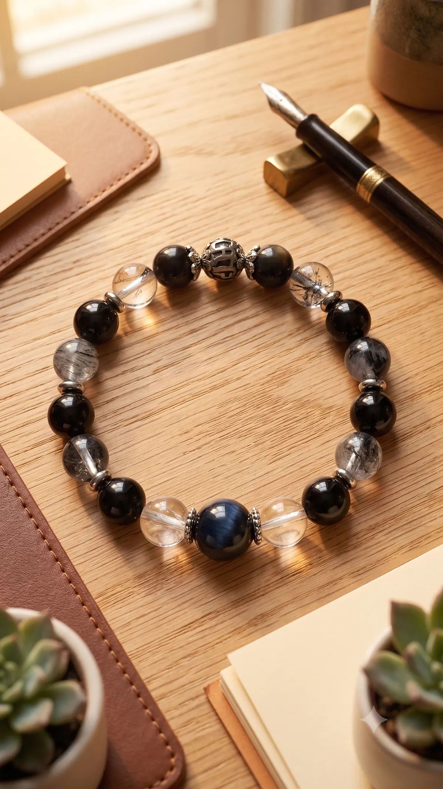
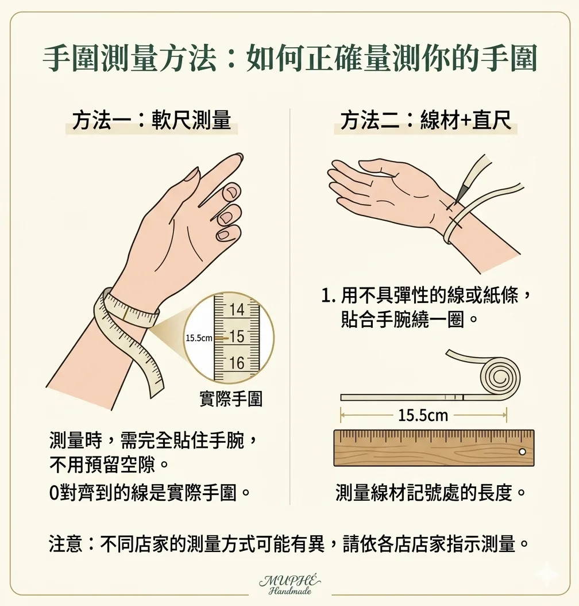

Work Mode
上班族補氣場
放在職場、創作、接案與財運行動的入口，對應需要專注和決策的客群。

MUPHÉ HandmadeScene Finder
用生活語言找到商品，再用晶種、色系、功效和手圍需求做第二層確認。初次買水晶也能快速知道哪一款適合自己。
Scene Moodboard

放在職場、創作、接案與財運行動的入口，對應需要專注和決策的客群。

適合接到職場防小人、專注與界線感的手鍊內容。

對應深度關機沉睡、音頻儀式和療癒內容。

可放在音頻儀式、保養淨化與品牌故事延伸。

適合水晶百科、保養淨化與入門教學頁。
Launch Collection
每一款都可依手圍客製，商品頁會說清楚：適合誰、什麼情境戴、用了哪些晶種、客製方式、淨化保養和包裝內容。
Crystal Guide
在沐菲，我們相信水晶是反映內心的鏡子。挑選的秘密很簡單：先選生活場景，再選對應晶種。以下 4 款日常必備基本款水晶，看看哪一個寫著你現在的名字。
情境 01
情境 02
情境 03
情境 04
如果四種場景都遇到了，就閉上眼睛深呼吸三次，張開眼後選第一眼最想靠近的那一條。你的潛意識，往往比大腦更知道此刻缺乏什麼，這就是屬於你的眼緣。
每款手鍊依你提供的手圍客製，會調整珠數、鬆緊與整體節奏。
避免長時間泡水、碰撞和化學清潔，收納前以軟布擦拭。
Brand Story
沐菲相信，水晶不只是裝飾，更是一場關於覺察的內心練習。我們以水晶為引，將手作的溫度注入現代人的生活哲學中，打造一門真正看得懂人心、貼近情緒需求的品牌。
沐菲堅信手作的溫度需要結合「聰明」的思維。我們時刻洞察現代人的生活痛點，順應時代的風格潮流，並持續研發設計。我們用心聆聽市場的聲音，將這份理解轉化為能與靈魂共鳴的作品，讓傳統工藝展現出前所未有的靈活與生命力。
為了陪伴你面對生活中的每一個面向，我們把每一串水晶手鍊，都打造成專屬的「生活場景角色切換器」：
戴上它，賦予你面對挑戰的勇氣，在職場與舞台上璀璨耀眼。
當需要劃清界線時，它是你的底氣，溫柔而堅定地拒絕不合理的消耗。
卸下重擔，讓它陪你切換到放鬆模式，把雜亂的思緒與緊繃的腦袋徹底關機。
在沐菲，每一條手鍊都是一段陪伴你找回自我的旅程。我們期盼透過水晶的溫潤能量，幫助你在快節奏的世界裡，靈活切換各種角色，同時始終保有最真實、最舒適的自己。
FAQ
用軟尺貼著手腕量一圈，喜歡貼手可加 0.5 公分，喜歡寬鬆可加 1 公分。客製款會依手圍微調珠數。

所有手鍊皆可客製。可調整手圍、主色感與少量晶種，若變動太大會另外報價。
天然水晶有雲霧、冰裂、礦缺與色差，每顆都不完全相同。商品照呈現的是整體風格與配色方向。
一般客製手鍊約 3-7 個工作天製作寄出；若需特殊晶種或排單較滿，會先告知預估時間。
客製手圍、客製晶種與個人化調整商品不適用一般退換；若收到商品有瑕疵，請保留開箱影像協助處理。
日常以軟布擦拭，避免泡水、碰撞、香水與清潔劑。可用白水晶碎石、月光或靜置方式做溫和淨化。